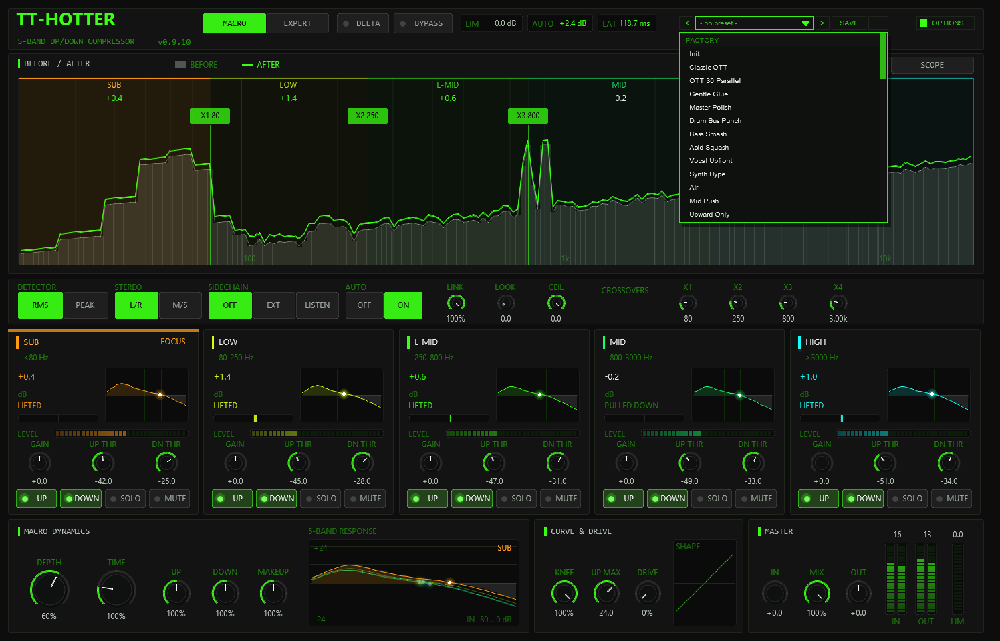
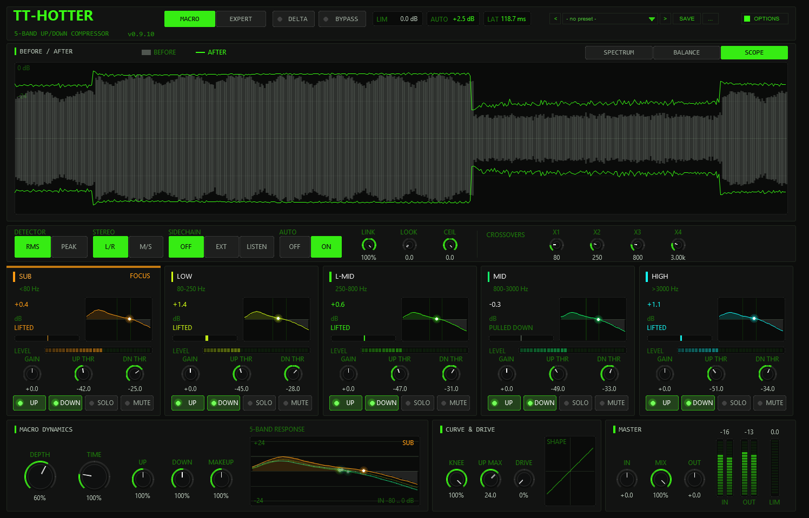
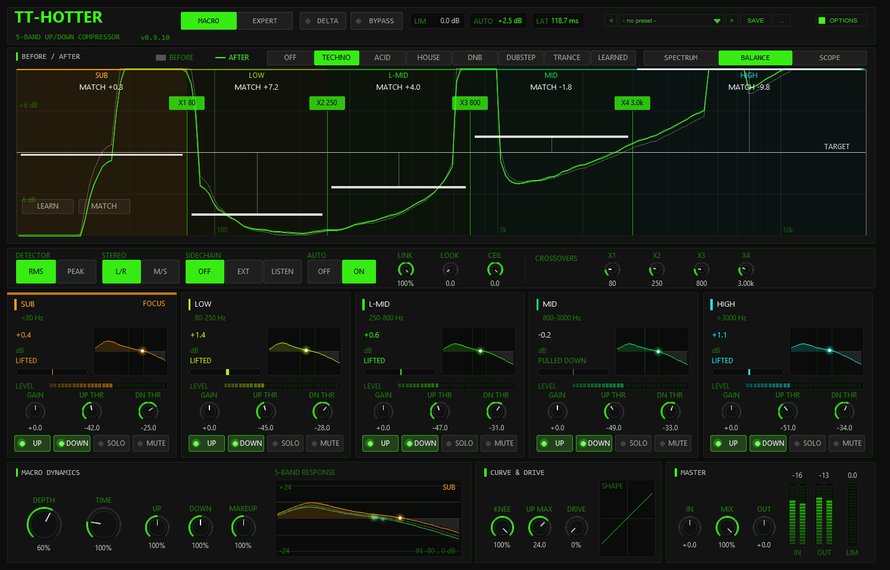
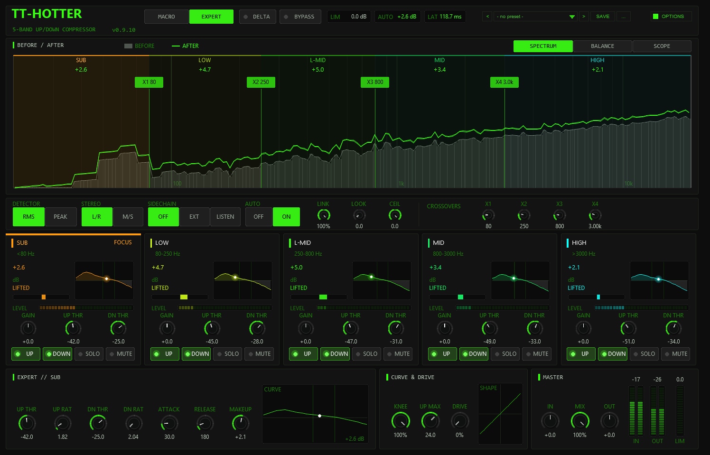
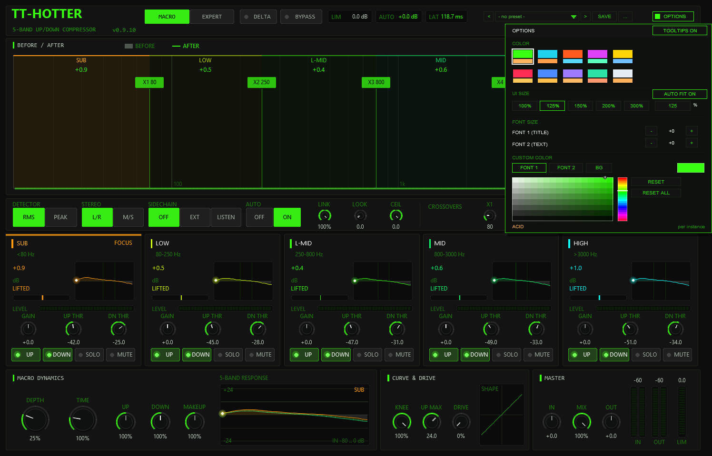

01The concept
OTT-style compression splits the signal into bands and runs two compressors in each band at the same time: an upward branch raises everything below its threshold, a downward branch pulls everything above its threshold down. Quiet detail comes up, loud parts are held, and the bands add up to a dense, loud sound.
TT-HOTTER does this in five bands (SUB, LOW, L-MID, MID, HIGH) instead of three. The crossovers are linear-phase: the bands sum back to the input without phase shift when nothing is compressed. That costs latency, which REAPER compensates automatically (plug-in delay compensation).
input → IN → stereo handling → linear-phase split at X1..X4 → SUB | LOW | L-MID | MID | HIGH
each band: detector → gain = make-up + up(below UP THR) − down(above DN THR) → band GAIN
bands → sum → DRIVE → AUTO GAIN → MIX with dry → OUT → true-peak CEILING → outputThe factory tuning is level-neutral on pink noise (within 0.3 dB per range at the start setting) and gives music a slight “smile” at high DEPTH, as OTT-style settings usually do.
02HOTTER and HOTT: the twins
TT-HOTTER has a twin with three bands: TT-HOTT, released on the same day.
TT-HOTT and TT-HOTTER are twins: the same idea (upward and downward compression in every band at the same time), the same macros and the same look. They are not the same plug-in twice. They differ in how the signal is split into bands, and that one decision changes latency, phase, resolution and what each one is best at.
| TT-HOTT | TT-HOTTER | |
|---|---|---|
| Bands | 3: LOW, MID, HIGH | 5: SUB, LOW, L-MID, MID, HIGH |
| Crossovers | Linkwitz-Riley (IIR), minimum phase. CLASSIC: fixed at 88.3 Hz and 2.5 kHz; EXPERT: X1 40–800 Hz, X2 800 Hz–12 kHz | Linear phase (FFT). X1–X4 always free: 20–400 Hz, 40–1000 Hz, 100–4000 Hz, 400 Hz–12 kHz; drag them in the display |
| Latency | None without lookahead; LOOKAHEAD up to 5 ms, plus 1.5 ms when CEILING is on | 5240 samples (about 109 ms at 48 kHz, 119 ms at 44.1 kHz), plus LOOKAHEAD up to 10 ms |
| Sound model | CLASSIC follows the measured behaviour of the well-known factory setting; EXPERT shows the same sound as numbers | Own tuning for five bands, level-neutral on pink noise at the start setting |
| Modes | CLASSIC ↔ EXPERT keep the sound in both directions (the macros are fitted back as closely as possible, HINT shows any rest) | MACRO → EXPERT keeps the sound; back to MACRO follows the macros again |
| EXPERT view | All three bands at once (EXPERT VALUES strip) | The focused band (click a band to focus it) |
| Display | Spectrum strip, per-band transfer curves with up/down meters, numbers bar, HINT line, START guided setup | Before/after display with SPECTRUM, BALANCE and SCOPE, genre target curves with LEARN and MATCH, per-band curve with live dot, 5-BAND RESPONSE |
| Saturation | none | DRIVE (tanh shaper after the band sum, 0 = clean) |
| Ceiling | True-peak limiter with 1.5 ms lookahead, −12 to 0 dBFS (factory −0.3 dBFS) | True-peak limiter, −24 to 0 dBFS (factory 0 = off) |
| AUTO GAIN | off by default | on by default |
| Both have | DEPTH, TIME, UP, DOWN and MAKEUP macros, KNEE, UP MAX, RMS/PEAK detector with stereo LINK, stereo or mid/side, sidechain OFF/EXT/LISTEN, MIX, DELTA, BYPASS with the same latency, per-band GAIN, UP/DOWN switches, SOLO and MUTE, user preset bank, the same colour scheme | |
The real difference: how the bands are split
TT-HOTT uses Linkwitz-Riley crossovers, like the classic OTT-style effect. They are minimum-phase filters: no latency, and the bands add up to a flat level, but with a phase turn around each crossover. On most material you do not hear that turn; it is part of the familiar sound. The price is that a kick or bass note around the crossover is smeared slightly in time, and with only three bands the lowest band holds sub and kick body together.
TT-HOTTER uses linear-phase crossovers. With nothing compressed the bands add up to the input exactly, with no phase turn at all. That needs a look into the future: about 109 ms at 48 kHz, which REAPER hides with plug-in delay compensation on playback. Five bands mean the sub (below 80 Hz) is compressed apart from the kick body and the low mids, so the low end stays steadier at high DEPTH. One side effect is typical for linear-phase filters: when bands get very different gains, a sharp transient can get a faint pre-echo just before it. At normal settings it is masked.
Which one when?
- Recording, live input, playing a synth through it: TT-HOTT. TT-HOTTER’s latency makes monitoring while you play impossible.
- The classic OTT sound, fast: TT-HOTT in CLASSIC. Its macros follow the measured original.
- Kick and bass, techno and house low end: TT-HOTTER. SUB and LOW are separate, there is no phase turn at the crossovers, and the crossovers can sit exactly where your kick and bass meet.
- Mix bus and master: TT-HOTTER for the finer split, the true-peak ceiling and the target curves (LEARN, MATCH); TT-HOTT when you need zero latency or the lowest CPU load.
- Drums with sharp transients at heavy settings: try both. TT-HOTT keeps the attack free of pre-echo, TT-HOTTER keeps it in phase.
- Many instances in a big project: TT-HOTT uses less CPU.
Presets carry the same names where they do the same job (for example Hypnotic Tops and Techno Master), so you can A/B the twins on the same track. Numbers are not interchangeable: a TT-HOTT preset loaded by hand into TT-HOTTER does not give the same sound, because the bands lie elsewhere.
03Quick start
- Insert
TT-HOTTERon a synth, bass, drum bus or vocal. A new instance starts at DEPTH 25 %: a mild amount, nothing takes over. - Turn DEPTH up for more. AUTO GAIN (on by default) keeps the level comparable, so you judge the sound and not the loudness.
- Too squashed? Lower DOWN. Too noisy or hissy? Lower UP or raise a band’s UP THR.
- Watch the display: green is the output, grey the input. The numbers above each band say what the band does right now (+ lifts, − pulls down).
- For the classic over-the-top sound load the preset Classic OTT; for the common parallel use OTT 30 Parallel (see Factory presets).
04Header: mode, delta, bypass, readouts
- MACRO / EXPERT — MACRO drives all bands with the macros below. EXPERT edits threshold, ratio, times and make-up of the focused band directly (EXPERT mode). Switching back to MACRO follows the macros again; it does not fit them to the expert numbers.
- DELTA — plays only the difference the plug-in makes (output minus input).
- BYPASS — fades the processing out and back in.
- LIM shows the gain reduction of the ceiling limiter, AUTO the current auto-gain correction, LAT the latency reported to REAPER.
- The preset bar (arrows, list, SAVE, menu) and OPTIONS sit on the right.

05The display: SPECTRUM, BALANCE, SCOPE
The large display compares before and after. Choose the view with the three buttons on its top right:
- SPECTRUM — input spectrum (grey) and output spectrum (green).
- BALANCE — the tonal change: output minus input, averaged over time. A flat line means the plug-in does not tilt the sound.
- SCOPE — peak level over the last three seconds, input grey, output green. Here you see upward compression lift the quiet parts and downward compression pull the loud parts in.
The handles X1 … X4 at the top are the crossovers: drag them, right-click resets one. A crossover cannot pass its neighbours; they keep at least a factor of 1.25 apart (also under automation). Click into a band to focus it.

06Target curves, LEARN & MATCH
In BALANCE a target row appears: OFF, TECHNO, ACID, HOUSE, DNB, DUBSTEP, TRANCE and LEARNED. The genre curves are rough hand-made starting points, not measured references. With a target selected, a white bar per band shows how far the output sits above or below the target, and the value above each band is what MATCH would change.
- LEARN — play a reference track through the plug-in and press LEARN. Its long-term tonal balance becomes the LEARNED target. Press again to stop.
- MATCH — moves the five band GAIN trims 80 % of the way to the target (limit ±12 dB), exactly by the values shown before you press it.

07Band columns
Each band has its own colour, from orange (SUB) through yellow, green and teal to cyan (HIGH), the same arc as in TT-HOTT; the colours follow the colour scheme in OPTIONS. Each band has its own column: name and range, the current effect in dB (LIFTED, PULLED DOWN or UNTOUCHED) with a bar for up/down action, and next to it the gain curve of the band over input level (−80 … 0 dB). The dot on the curve is the live input; the two dim lines are the up and down thresholds. An LED chain shows the band input level. Below:
- GAIN — band level after the dynamics, −24 … +24 dB.
- UP THR / DN THR — upward and downward threshold of this band. Factory values: UP −42/−45/−47/−49/−51 dB, DN −25/−28/−31/−33/−34 dB (SUB … HIGH).
- UP / DOWN — switch the upward or downward branch of this band on or off.
- SOLO / MUTE — listen to single bands; solo wins over mute.
08Macros, curve, drive & master
- DEPTH (0–100 %) — overall amount. 0 % leaves only crossovers and levels.
- 5-BAND RESPONSE — the gain curves of all five bands in one view, the focused band bright, each with its live dot. You see at a glance which band lifts and which pulls down.
- TIME (25–400 %) — scales attack and release of all bands.
- UP / DOWN (0–200 %) — strength of the upward and downward branch.
- MAKEUP (0–200 %) — scales the per-band make-up (factory 3.5/2/1.5/2.5/4 dB at full DEPTH).
- KNEE (0–100 %), UP MAX (0–36 dB, the most the upward branch may add), DRIVE (0–100 %, saturation after the band sum; 0 is clean). SHAPE draws the shaper at the current DRIVE.
- IN, MIX (dry/wet), OUT, with LED meters for input and output (left/right) and LIM, the limiter reduction from 0 to 12 dB.
09EXPERT mode
EXPERT shows a strip for the focused band: UP THRESH, UP RATIO, DN THRESH, DN RATIO, ATTACK, RELEASE and MAKEUP as direct values. Click a band column or a band in the display to focus it.

10Detector, stereo, sidechain, lookahead
- DETECTOR RMS or PEAK. RMS averages the band power over a few milliseconds (5 ms in SUB and LOW, 2–3 ms above) and both channels: smoother, transients pass. PEAK reacts with half the attack and takes the louder channel: tighter on peaks. STEREO L/R or M/S, LINK 0–100 %. In M/S the SUB band never lifts the side above the mid, so the sub stays mono.
- SIDECHAIN OFF, EXT (pins 3/4 drive the detectors) or LISTEN (hear the sidechain).
- AUTO — auto gain on/off. LOOK — lookahead 0–10 ms. CEIL — true-peak ceiling, 0 dB = off.
- X1–X4 — the crossover frequencies as knobs (factory 80, 250, 800, 3000 Hz).
11Factory presets
23 presets, built around the usual OTT uses and around typical jobs:
- Init — DEPTH 0, crossovers and levels only.
- Classic OTT — full depth, crossovers 88 Hz / 2.5 kHz with the middle split in three.
- OTT 30 Parallel — full depth, 30 % mixed in: the most common way to use OTT.
- Gentle Glue — light glue for busses. Master Polish — soft, slow, thresholds 3 dB higher, ceiling −1 dB.
- Drum Bus Punch — fast, more downward, a little drive. Bass Smash — low crossovers, dense, sub a bit louder.
- Acid Squash — for 303 lines: resonance range squeezed, drive, parallel.
- Vocal Upfront — mids forward, no upward on the sub. Synth Hype — lots of upward, drive, a bit more top.
- Air — only the high band upward. Mid Push — only the mid band upward, parallel.
- Upward Only / Downward Only — one branch only. Dirty OTT — full depth, drive 40, parallel, ceiling.
- Bass Body — dynamics off, band EQ only.
Techno presets
- Techno Kick Punch — kick bus: crossovers 60/200 Hz, more downward, a slower attack lets the click through, no upward on SUB and LOW so the kick tail does not swell, body +1 dB, a little drive, ceiling −1 dB.
- Techno Rumble Bus — for the rumble (kick plus reverb in the low end): crossovers 50/150/600 Hz, denser downward, slow, no upward on SUB and SUB −1 dB, so the tail does not cover the next kick.
- Hypnotic Tops — hats, rides and percussion loops: fast, lots of upward for room and ghost notes, SUB and LOW without dynamics and turned down, HIGH from 6 kHz +1.5 dB, 80 % mix.
- Warehouse Drums — parallel drum bus: full depth with drive, 35 % mixed in, kick body and top a little louder.
- Industrial Crush — hard and dirty for industrial and hard techno: UP and DOWN 170 %, fast, drive 60, 75 % mix.
- Dub Techno Stabs — chord stabs with delay and reverb: slow, lots of upward brings the tails up, little downward, SUB and LOW without upward and −3 dB, 60 % mix.
- Techno Master — the sum: soft and slow, no upward on SUB so the kick stays steady, thresholds 3 dB higher, lookahead 2 ms, ceiling −1 dB.
Your own presets go into the user bank with SAVE.
12Troubleshooting
- The track is late against others — check that REAPER’s plug-in delay compensation is on; the linear-phase crossovers need it.
- Noise and hiss come up — expected with upward compression. Lower UP, raise UP THR or switch UP off in the bands that carry noise.
- A band is silent — check MUTE and the SOLO of the other bands.
- LEARN does nothing — it needs audio; on silence no curve is taken.
13Changelog
0.9.10 — Review fixes
- FIX: turning CEILING on measures the peak across the whole window once, instead of using a peak that was only tracked while CEILING was already on.
0.9.9 — Reworked DSP core
The sound changes on purpose; controls, presets and latency stay the same.
- AUTO GAIN measures after DRIVE and ignores everything below 120 Hz. DRIVE no longer makes the output quieter, and a pulled-down kick no longer makes AUTO GAIN push the hats and synths up.
- Upward in pauses: below the upward threshold the release slows down, so quiet tails rise gently instead of being sucked up. Below −60 dB the upward gain fades out (half at −72 dB, none below −84 dB): noise between kicks and in breakdowns is no longer lifted by 20 dB and more, and the first hit after silence does not meet a wide-open band.
- DETECTOR RMS and PEAK now differ on mono sources too (see the detector description).
- CEILING holds the full reduction over five samples around a peak (less overshoot between samples) and recovers from a single peak in about 12 ms; only longer limiting releases slowly (120 ms).
- DRIVE sends half of SUB and a quarter of LOW past the shaper and adds them back unchanged: the kick no longer roughens the hats above it. DRIVE 0 is unchanged.
- LOOKAHEAD is limited per band to half its attack, so fast bands no longer duck a hat before it hits.
- Crossover slopes are log-symmetric and wider above each crossover (less ringing before a kick).
- The oversampling of DRIVE computes only the non-zero filter taps: the same result at about a quarter of the CPU.
0.7.1 — Techno presets, review fixes
- Seven techno factory presets: Techno Kick Punch, Techno Rumble Bus, Hypnotic Tops, Warehouse Drums, Industrial Crush, Dub Techno Stabs, Techno Master.
- The SHAPE display has its own copy of the saturation function. With DRIVE above 0 and the window open, the display could rarely hand one wrong sample to the audio.
- The UP and DOWN tooltips say where DEPTH caps them; the EXPERT MAKEUP knob resets to the band default on double-click.
0.4.0 — Presets and a brighter factory sound
- 16 factory presets (Classic OTT, OTT 30 Parallel, Master Polish, Drum Bus Punch, Bass Smash, Acid Squash, Vocal Upfront, Synth Hype, Upward Only, Downward Only, Dirty OTT and more).
- Default band thresholds and make-up retuned: the factory sound is no longer darker than the input (pink noise within 0.3 dB), music gets a slight OTT-style smile.
0.3.1 — Display fixes
- No thin dark line through buttons and bars at odd UI sizes. Crossover handles at the top of the display with name and frequency. MATCH shows its values before you press it and applies exactly those.
0.3.0 — Targets
- UP THR and DN THR per band column. BALANCE target curves (genres and LEARNED), LEARN and MATCH.
0.2.0 — Before/after display
- SPECTRUM, BALANCE and SCOPE with draggable crossovers, band columns, EXPERT strip. Crossovers can no longer pass each other.
0.1.0 — First version
- Five-band linear-phase upward/downward compressor, drive, true-peak ceiling, external sidechain.
UI Size & Saved Options
Updated in v0.9.9. New instances open at 125% UI size for clearer text. The controls and text are redrawn at the selected size; the colour scheme and background retain their appearance.
Open OPTIONS and choose UI SIZE: 100% / 125% / 150% / 200% / 300%, or click the percentage field and enter a whole number from 25 to 400. Enter or a click outside the field applies it; Escape cancels the edit. Values outside the range are limited to the nearest supported value.

AUTO FIT. When you drag the edge of the FX window, the front rescales to the new window size (the largest whole percentage that shows the whole front, 25 to 400 %) and the scrollbars disappear. The UI SIZE buttons and the percentage field still set a fixed size, which stays until you change the window again. AUTO FIT ON / OFF in the UI SIZE row of OPTIONS switches the rescaling off for this instance; the setting is saved with the project. Switching it on fits the front to the current window at once.
If the enlarged front exceeds the host window, use the horizontal and vertical scrollbars to reach every control. The mouse wheel over a scrollbar moves that view. OPTIONS stays visible at the upper right. You can also enlarge the REAPER FX window to show more of the front.
All OPTIONS settings are saved per instance: UI size, colour scheme, title and text font sizes, custom title/text/background colours, colour-picker target, and TOOLTIPS ON / OFF. Closing and reopening the FX window keeps them; saving and reopening the project restores them. They also travel with FX chains and native REAPER FX presets. Save the project to keep changes between sessions.
The sound presets in the plugin's own preset bar retain the instance's appearance settings. Older projects and style blocks remain readable; projects that predate UI SIZE use the new 125% default.